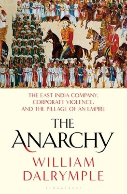

Library › History
The Anarchy: The Relentless Rise of the East India Company — Summary & Key Lessons

The first multinational was a corporation with an army. In forty years it devoured the richest empire on earth, and no government could stop it.
📖 OPEN THE FULL INTERACTIVE BREAKDOWN →🌐 Read it in Hindi, Hinglish, Gujarati, Tamil & 22 more languages — free, with audio.
💡 The Big Idea
Dalrymple narrates the most improbable conquest in history: a London joint-stock company, run by merchants for shareholders, ended up ruling the subcontinent through a private army twice the size of England's. The mechanism was financial as much as military: EIC conquered with the balance sheet (loans, dividends, share price) as the compass, plundering Bengal's revenue to pay for the conquest of Bengal. The book's anatomy of corporate sovereignty covers every failure mode that modern regulatory language exists for: information asymmetry turned into intelligence warfare, court politics turned into contract politics, famine (1770 Bengal, up to ten million dead) rationalized as revenue collection, and a home government captured by lobbying and shares. It ends with the 1857 uprising and Crown takeover, the state reluctantly absorbing the monster it had licensed. The lesson set is timeless for anyone building, regulating or investing in organizations too big to be governed by their owners.
🧠 The 7 Key Lessons
Lesson 1: Conquest Is a Business Model Before It Is a Battle
The Merchant's Army
EIC's expansion was driven by quarterly dividends, not imperial strategy: revenues from one conquest financed the next, and share price justified everything. Commanders behaved like portfolio managers, attacking where returns were highest (Bengal's wealth) and retreating where they were not. The structural lesson: when an organization's owner-metric becomes its mission, the mission is whatever the metric can eat next.
📖 Example: After Plassey, the Company installed puppet nawabs to extract revenue (Diwani rights in 1765 formalized it), using Bengal's own taxes to pay Bengal's conquerors, a loop so profitable London share prices doubled. Read the full example →
⚡ Do this: Identify your organization's owner-metric. Then ask honestly what it would optimize away if unregulated. That answer is your risk register.
Lesson 2: Information Asymmetry Is the Real Weapon
Spies, Translators, Ledger Books
EIC won repeatedly with better intelligence: Resident spies in every court, translated correspondence, bribery ledgers, maps of local factional politics. Indian powers fought with valor and dynasty; the Company fought with archives. Modern version: whoever understands the data layer of a market (customers, regulation, supply chains) owns it, whatever the incumbents' surface strength.
📖 Example: At Plassey, Robert Clive's real weapons were weeks of secret correspondence with Mir Jafar's faction and a banker (Jagat Seth's networks) financing betrayal, ensuring the battle was decided before it began. Read the full example →
⚡ Do this: In your market, map who owns the data layer (customer behavior, pricing, regulation). If it is not you, that is your first strategic investment, before any product bet.
Lesson 3: Divide-and-Contract: Fragmentation Invites Capture
The Mughal Succession
The Mughal empire's post-Aurangzeb fragmentation (succession wars, ambitious nawabs, Maratha and Sikh rises) gave EIC dozens of sovereigns to play against each other, each seeking a foreign ally for local disputes. Fragmented governance is capturable governance: the Company rarely faced a united opponent. The modern echo: fragmented regulatory or competitive landscapes favor scaled, coordinated actors.
📖 Example: Carnatic wars, Bengal coups and southern alliances were each decided by EIC backing one Indian claimant against another, with each victory costing the Company less than the last. Read the full example →
⚡ Do this: If you are the incumbent being fragmented (a market, a category, a union), your existential priority is coordination among peers before outsiders price your divisions.
Lesson 4: The Famine Audit: When Extraction Has No Liability
1770 Bengal
The Great Bengal Famine (up to a third of Bengal's peasants dead) followed a decade of revenue-maximization: taxes collected in advance, grain exported, no famine relief because famine was not on the balance sheet. The Company's charter gave it rights without the liabilities of sovereignty. Modern principle: extractive entities that capture upside while externalizing catastrophe will produce catastrophe, and the correction (regulation, revolt, nationalization) eventually arrives violently.
📖 Example: Even as millions starved, the 1771 revenue collection was recorded as higher than the previous year, an accounting fact Dalrymple deploys as the purest indictment of owner-metric governance. Read the full example →
⚡ Do this: List the externalities your business creates that carry you no cost (burnout, churn, community, environment). Assume they compound quietly and price them before someone else does.
Lesson 5: Lobbying Beats Legislation, Until It Doesn't
The Shareholder State
EIC survived every parliamentary attempt at restraint (and there were many, from the 1773 Regulating Act onward) through lobbying, flattering MPs with shares and contracts, framing restraint as anti-trade. But each scandal tightened the screws until 1857's revolt brought full nationalization. The arc matters: captured regulation delays accountability and raises its final price.
📖 Example: Edmund Burke's impeachment of Warren Hastings (1788-95) failed legally yet shifted public moral accounting, the beginning of a legitimacy slide that ended only with the Crown seizing the Company outright. Read the full example →
⚡ Do this: If your strategy depends on regulatory leniency, model its half-life honestly. Design toward standards you could survive if the leniency ends tomorrow.
Lesson 6: Private Armies Are Hired Emotions
Sepoy Loyalties
EIC's power rested on sepoys: Indian soldiers paid reliably by a company that (unlike local kings) never defaulted on salaries. But the army's loyalty was transactional and religiously sensitive; the 1857 greased-cartridge rumor ignited the largest revolt of the era. The general law: outsourced coercion (or outsourced anything critical) is rented loyalty, and rents are renegotiated at the worst possible moments.
📖 Example: The revolt began with sepoys at Meerut, but its spread mapped onto accumulated grievances (pay, status, foreignness of command) that Company reports had listed for years and discounted. Read the full example →
⚡ Do this: Wherever you rely on contractors, gig workers or partner ecosystems for your core promise, ask what happens when their economics or dignity break. Build the rent structure to survive that break.
Lesson 7: Corporate Sovereignty Ends Badly for Everyone
The Crown Takes Over
The 1857 aftermath ended Company rule (Government of India Act 1858): the state absorbed the assets, debts, armies and blame. Shareholders lost their conquest-dividend; Britain inherited an empire of obligations it had never chosen directly. The lesson: when a corporation grows beyond its governance, the endgame is not bankruptcy but expropriation, and the public inherits the wreckage.
📖 Example: The Company that once owned half the world's trade ended as a cautionary clause in textbooks, its final function the administration of its own dissolution. Read the full example →
⚡ Do this: For any venture that touches critical public functions, imagine the state as your eventual successor. Build so that succession (acquisition, regulation, nationalization) is survivable and dignified.
✅ 5-Step Action Plan
- Write down what your owner-metric would optimize away if unregulated; manage that list.
- Invest in the data layer of your market before any product bet.
- If incumbency is yours, build peer coordination before outsiders price your divisions.
- Price your externalities now, before revolt, regulation or famine audits do.
- Treat outsourced core functions as rented loyalty and build rent structures that survive a dignity break.
⚠️ When This Doesn't Work
Dalrymple writes narrative history with a strong moral frame (EIC as proto-corporate villain); historians debate degrees (Company agency versus structural forces, Indian collaborator agency, Bengal famine causes). The corporate-conquest framing, while powerful, is retrospective: no 17th-century actor had a doctrine of corporate sovereignty. Read it as the sharpest narrative synthesis of the era and a deliberate mirror held up to the present, not as neutral administrative history.
💀 The Graveyard Proves It
⚔️ The Battle of Plassey — The Betrayal That Gave India's Richest Province to a Trading Company. Burn: The Nawab's kingdom, Bengal's treasury, and 200 years of subjugation. Read the full case study →
💬 Best Quotes from The Anarchy: The Relentless Rise of the East India Company
- “We have the richest country in the world, governed by a corporation whose only loyalty is to its share price.”
- “No ancient empire, no empire of the steppe, was ever conquered by a joint-stock company. It was a first, and a warning.”
- “The Company's armies did not fight for flags. They fought for salaries, paid from the revenues of the country they were conquering.”
- “Plassey was not a battle. It was a transaction.”
Interactive version: mark lessons as read, listen in your language, share quote cards.